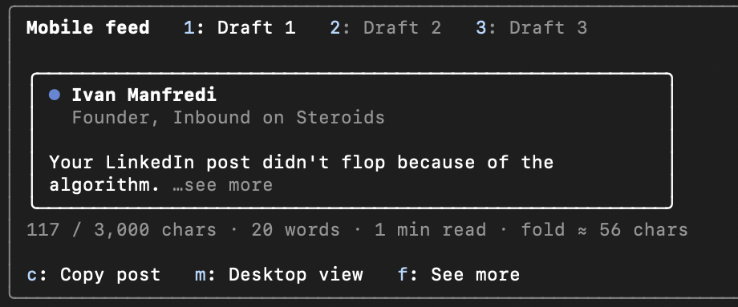
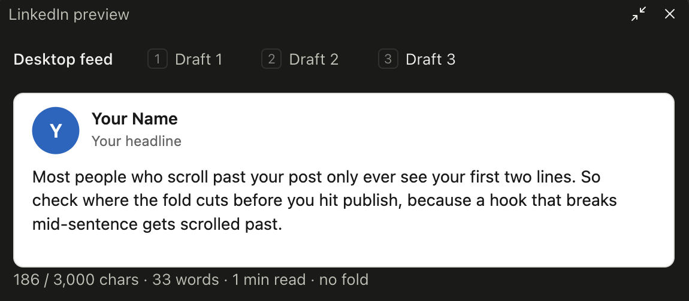

See where "see more"
cuts your post.
Ask Claude for a LinkedIn post like you always do. A pane opens in Claude Code with each draft on a LinkedIn post card, cut where the feed cuts it.
Needs Claude Code 2.1.287 or newer.
Runs in the terminal and in the Code tab of the Claude Desktop app.

Two commands
in Claude Code.
Run them inside a Claude Code session, in the terminal or in the Desktop app's Code tab.
/plugin marketplace add ivanmanfre/manfredi /plugin install linkedin-preview@manfrediThen run /plugin. The list shows linkedin-preview as an active mod.
- 01
Ask for a post.
For example: write 3 hook variants for a LinkedIn post about your topic. The mod asks Claude to put each draft in its own block, so it knows where every draft starts and ends.
- 02
Read the fold.
When Claude finishes, a line under the answer counts the drafts and the pane opens. A narrow terminal shows the line only. Run
/previewto open the pane at any width. - 03
Fix the hook, then copy.
Switch drafts and views, and press
cto copy the post with the markdown symbols removed, ready to paste into LinkedIn. - 04
Put your name on the card.
/preview-profile Your Name | Your headlinesets the card header. It's saved for later sessions.
The feed version
of every draft.
- The fold on mobile and on desktop. Both show 3 feed lines before "see more", and a blank line counts as one.
- A flag on
**bold**,# headings, links and code, which LinkedIn shows as raw symbols. - Your character count against LinkedIn's 3,000 limit, plus words and read time.
- One tab per draft when you ask Claude for a few hooks.
- A copy that strips the formatting before you paste.
| 1 to 9 | Switch drafts |
| m | Mobile or desktop view |
| f | See more or see less |
| c | Copy the post, markdown removed |
| Esc | Back to the prompt |

Before you install.
Where does it run?
In the Claude Code terminal and in the Code tab of the Claude Desktop app, on version 2.1.287 or newer. Check with claude --version. The claude.ai chat, the VS Code panel and claude -p don't draw mod panes.
Does it send my drafts anywhere?
No. It reads Claude's answers in your session and draws a pane. It makes no network calls and starts no programs. It saves your name, headline and preferred view in Claude Code's own plugin store. Run claude plugin validate on the folder to see every event and call it uses.
How exact is the fold?
We measured the live LinkedIn feed in October 2026: 3 lines on a phone and on desktop, about 54 characters per phone line and about 78 per desktop line. LinkedIn changes this without notice, so the pane marks the fold with ≈.
Nothing shows up. What now?
Update Claude Code if it's older than 2.1.287. "disableAllHooks": true in your settings turns every mod off, and some organizations block user mods. For a pane that opens by itself, the terminal needs 144 columns. /preview opens it at any width.
How do I remove it?
Run /plugin, open Installed, pick linkedin-preview and uninstall it.
Try it for one session.
Unzip, then start Claude Code with claude --plugin-dir ./linkedin-preview
Free · version 0.1.1